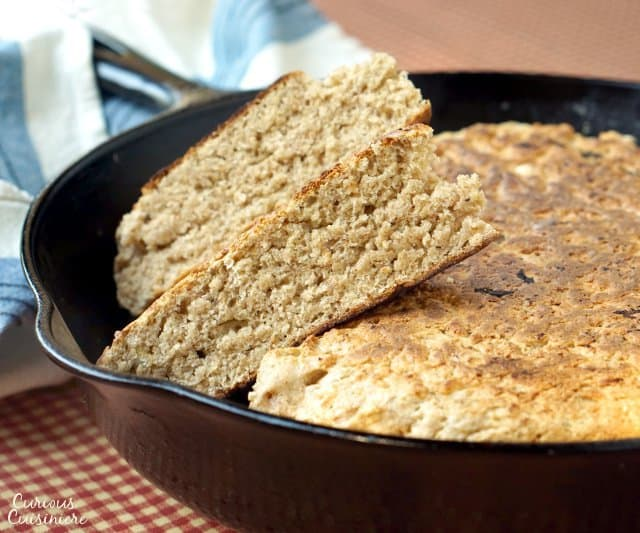
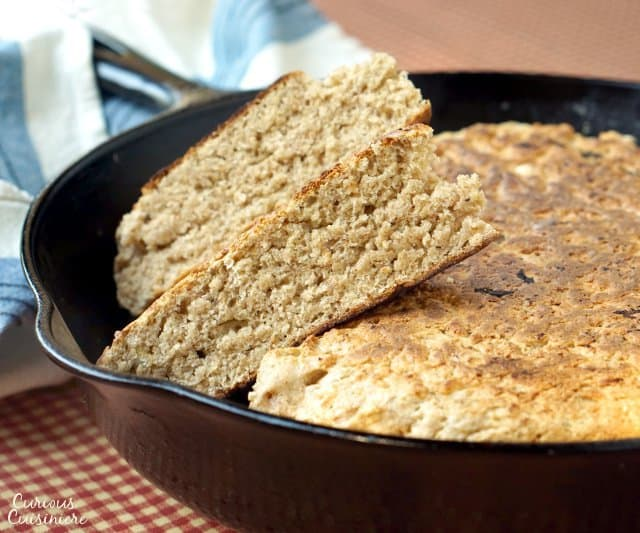
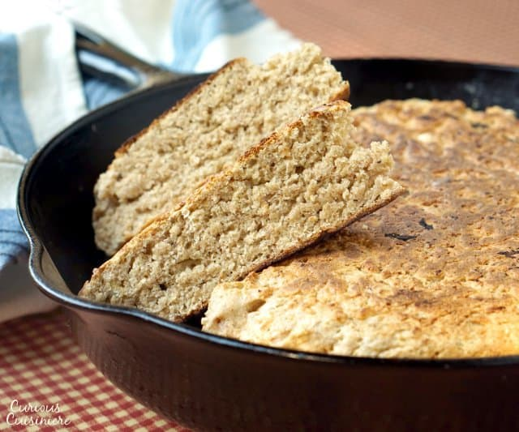
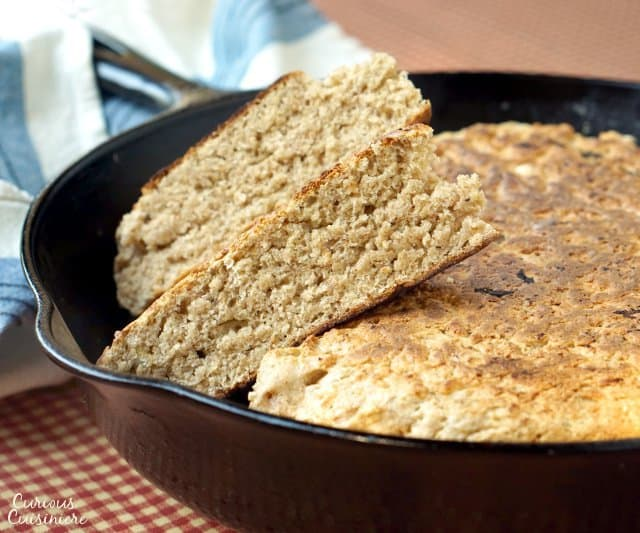

by Orate, Angelo Regis C.
After the Endurance sank amongst the ice floes of the Weddell Sea, this simple flatbread sustained the crew as it could be made easily with minimal equipment on a blubber stove made of scavenged metal from the shipwreck.
Bannocks are a simple form of bread akin to many found around the world, the name bannock is of Celtic origin from the north of England and Scotland, the name is used throughout the UK, the USA and Canada. They are made from flour, salt, water and fat and are often leavened with baking powder. They are usually fried in lard or butter or can even be cooked by wrapping round a stick and holding it over a fire. They are a quick and easy way of providing tasty carbohydrates with minimal equipment that can be used in any way that bread can, they go with almost any kind of spread, or can be used to mop up soups and stews.
They were especially good when spread with honey while still warm - recommended.